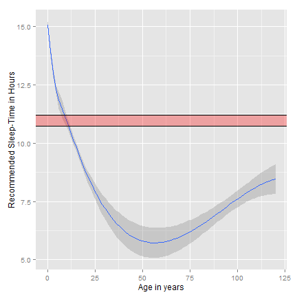

Sleepy App
by Manuel Kiewisch

Do you routinely stay up too long, punching R code, studying online...?
Do you suffer from any or multiple of the following?
- General Tiredness
- Red Eyes
- Hallucination
Then, this App is for YOU!
Sleepy App tells you how to sleep
The self-explanatory interface guides you trough the input panels, covering:
- Your Age
- Your usual sleep duration
- Your usual sleeping and waking times
In return, sleepy App calculates your sleep difference and optimal waking time!
The heart of sleepy App is the sleep-graph!
constructed from over one thousand sleep-samples in controlled experiments with happy sleepers
Here at the example of 50 years (Arrow Down for more)

Check out Sleepy App at
(www.sleepyApp.com)
If you have this nagging feeling that you don't get the most out of your sleep: Sleepy App will help you feel fitter!
